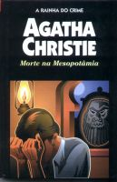

Morte na Mesopotâmia
Murder in Mesopotamia
Na misteriosa e fascinante Bagdá, uma expediçãoo arqueológica procura vestígios de uma antiga cidade assíria. Mas a arqueologia pouco pode ajudar, quando a bela e encantadora Louise Leidner, esposa do chefe da expedição, é brutalmente assassinada. É preciso que entre em cena o maior de todos os decifradores de enigmas: um conhecido detetive belga... Morte na Mesopotâmia é uma das mais sensacionais aventuras de Hercule Poirot, o genial investigador criado pela imaginação da “velha dama” do crime, Agatha Christie.
Rodrigo Brazão: Mrs. Leidner é assassinada em uma expedição arqueológica em Bagdá. Fora algo muito estranho pois ninguém vira pessoas circularem no pátio do local que dava acesso a cena do crime. Quem teria feito tal monstruosidade com a bela Louise? Só uma pessoa poderia responder: Hercule Poirot. Este livro é extremamente fantástico e como disse a narradora da história, a Enfermeira Amy, na revelação: “ficamos boquiabertos”. Não percam essa leitura emocionante que envolve mortes, roubos e até um pouco de ácido goela abaixo...
Nádia Oliveira: Durante uma expedição arqueológica à Bagdá, Poirot é chamado para solucionar um misterioso enigma: A mulher do chefe da expedição é assassinada em seu próprio quarto, só que o acesso parece impossível sem que o assassino seja visto, pois todos os ambientes da casa, sem exceção, tem ligação com um enorme pátio, onde o criminoso poderia ser visto facilmente por qualquer um. Além disso, a vítima, antes de morrer, estava assustada porque vinha recebendo cartas ameaçadoras de uma pessoa aparentemente morta. Um final realmente surpreendente!!! Não percam!!!